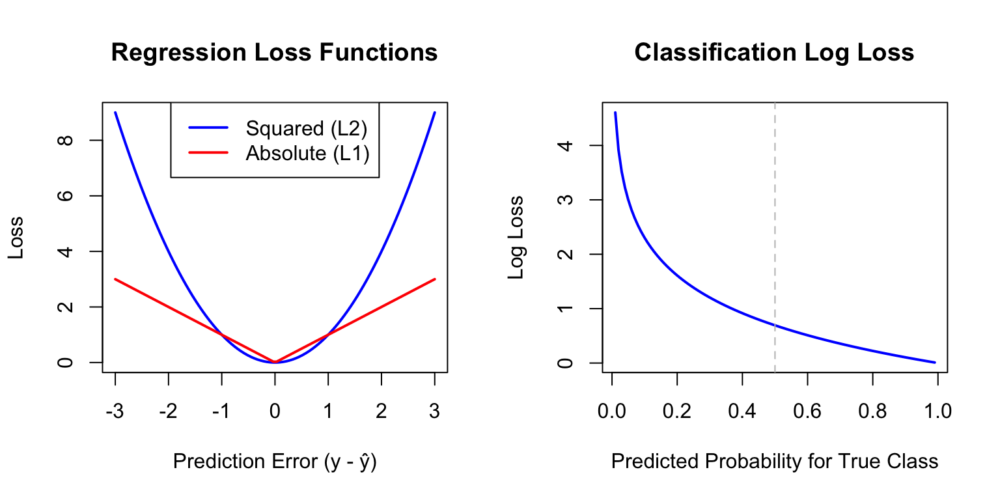
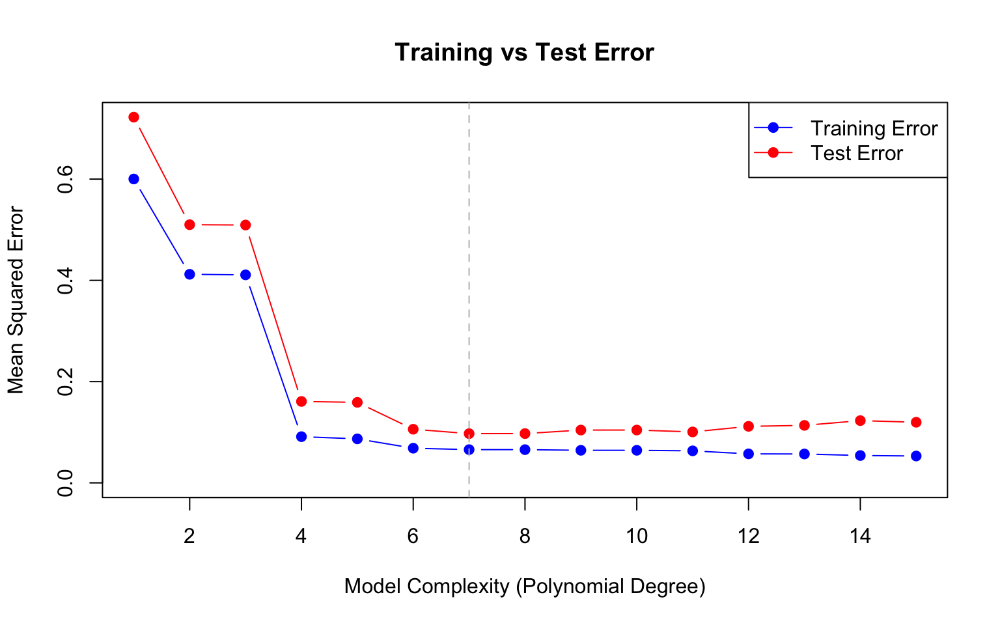
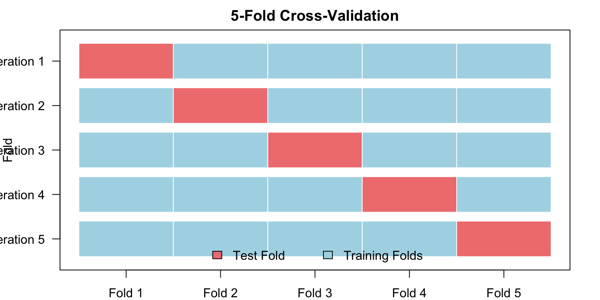
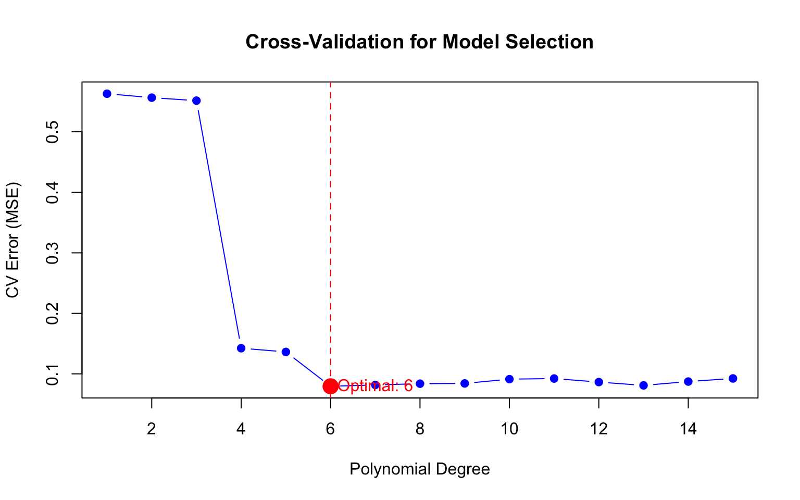
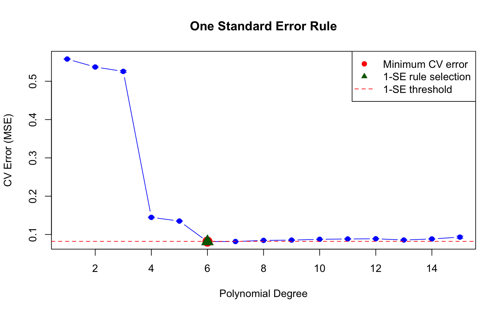

Models are built to fit training data as closely as possible. A linear regression minimizes squared errors; a logistic regression maximizes likelihood. But models that fit training data too well often predict poorly on new data.
Overfitting occurs when a model captures noise specific to the training data rather than the true underlying pattern. Complex models with many parameters are especially susceptible.
The solution is to evaluate models on data they have not seen—held-out test data or through cross-validation.
30.2 Loss Functions: Quantifying Prediction Error
A loss function (or cost function) measures how wrong a prediction is. It quantifies the penalty for predicting \(\hat{y}\) when the true value is \(y\).
Common Loss Functions for Regression
Squared Error Loss (L2): The most common loss for continuous outcomes: \[L(y, \hat{y}) = (y - \hat{y})^2\]
Squaring penalizes large errors more heavily than small ones. Linear regression minimizes the sum of squared errors (SSE or RSS).
Absolute Error Loss (L1): Less sensitive to outliers: \[L(y, \hat{y}) = |y - \hat{y}|\]
Mean Squared Error (MSE) and Root Mean Squared Error (RMSE) are averages across all predictions: \[\text{MSE} = \frac{1}{n}\sum_{i=1}^n (y_i - \hat{y}_i)^2, \quad \text{RMSE} = \sqrt{\text{MSE}}\]
Common Loss Functions for Classification
0-1 Loss: The simplest classification loss—1 if wrong, 0 if correct: \[L(y, \hat{y}) = \mathbb{I}(y \neq \hat{y})\]
The average 0-1 loss is the error rate; one minus the error rate is accuracy.
Log Loss (Cross-Entropy): Used when we have predicted probabilities \(\hat{p}\): \[L(y, \hat{p}) = -[y \log(\hat{p}) + (1-y) \log(1-\hat{p})]\]
Log loss penalizes confident wrong predictions severely—predicting probability 0.99 for the wrong class incurs much larger loss than predicting 0.6.
Code
par(mfrow =c(1, 2))# Regression loss functionserrors <-seq(-3, 3, length.out =100)plot(errors, errors^2, type ="l", col ="blue", lwd =2,xlab ="Prediction Error (y - ŷ)", ylab ="Loss",main ="Regression Loss Functions")lines(errors, abs(errors), col ="red", lwd =2)legend("top", c("Squared (L2)", "Absolute (L1)"),col =c("blue", "red"), lwd =2)# Classification log lossp <-seq(0.01, 0.99, length.out =100)plot(p, -log(p), type ="l", col ="blue", lwd =2,xlab ="Predicted Probability for True Class", ylab ="Log Loss",main ="Classification Log Loss")abline(v =0.5, lty =2, col ="gray")

Figure 30.1: Comparison of squared loss (penalizes large errors heavily) versus absolute loss (more robust to outliers)
Why Loss Functions Matter
Different loss functions lead to different optimal predictions, which has profound implications for how we should model data. Under squared loss, the optimal prediction at any point is the mean of the outcome distribution—this is why ordinary least squares produces predictions that minimize average squared error. Under absolute loss, the optimal prediction is the median, which is more robust to outliers. For classification under 0-1 loss, the optimal prediction is simply the mode—the most frequent class.
The choice of loss function should reflect how errors affect your application. In medical diagnosis, the consequences of different types of errors are typically asymmetric: missing a disease (false negative) may be far more costly than a false alarm (false positive). A thoughtful analysis would weight these errors differently rather than treating all misclassifications equally.
30.3 Training Error vs. Test Error
A fundamental insight of statistical learning is that training error (how well we fit the data used to build the model) is an overly optimistic estimate of test error (how well we predict new data).
Code
# Demonstrate training vs test errorset.seed(42)n <-100x <-sort(runif(n, 0, 10))y_true <-sin(x) +0.5*cos(0.5* x)y <- y_true +rnorm(n, sd =0.3)# Split into training and testtrain_idx <-sample(1:n, 70)train_data <-data.frame(x = x[train_idx], y = y[train_idx])test_data <-data.frame(x = x[-train_idx], y = y[-train_idx])# Fit polynomials of increasing degreelibrary(splines)degrees <-1:15train_error <- test_error <-numeric(length(degrees))for (i inseq_along(degrees)) { d <- degrees[i] fit <-lm(y ~poly(x, d), data = train_data) train_error[i] <-mean((train_data$y -predict(fit, train_data))^2) test_error[i] <-mean((test_data$y -predict(fit, test_data))^2)}# Plotplot(degrees, train_error, type ="b", pch =19, col ="blue",xlab ="Model Complexity (Polynomial Degree)",ylab ="Mean Squared Error",main ="Training vs Test Error", ylim =c(0, max(test_error)))lines(degrees, test_error, type ="b", pch =19, col ="red")legend("topright", c("Training Error", "Test Error"),col =c("blue", "red"), pch =19, lty =1)abline(v = degrees[which.min(test_error)], lty =2, col ="gray")

Figure 30.2: Training error always decreases with model complexity, but test error eventually increases due to overfitting. The optimal model minimizes test error.
Notice that training error keeps decreasing as complexity increases, eventually reaching near zero. But test error follows a U-shape—it decreases initially as the model captures true patterns, then increases as the model starts fitting noise.
30.4 The Bias-Variance Tradeoff
Prediction error has two main components:
Bias: Error from approximating a complex reality with a simpler model. Simple models have high bias—they may miss important patterns.
Variance: Error from sensitivity to training data. Complex models have high variance—they change substantially with different training samples.
Figure 30.3 illustrates this tradeoff visually. On the left, an underfit model (high bias) misses the pattern in the data. On the right, an overfit model (high variance) captures noise rather than signal. The optimal model complexity, shown in the middle, balances these competing concerns to minimize total error.
Figure 30.3: The bias-variance tradeoff visualized. Simple models (left) underfit the data, showing high bias. Complex models (right) overfit, showing high variance. The optimal model complexity (center) minimizes total error by balancing bias and variance. The U-shaped total error curve emerges because decreasing bias eventually comes at the cost of increasing variance.
Mathematically, for a given test point \(x_0\), the expected prediction error can be decomposed as:
where: - \(\text{Var}(\hat{f}(x_0))\) is the variance of the model predictions - \(\text{Bias}(\hat{f}(x_0))\) is the bias (systematic error) - \(\text{Var}(\epsilon)\) is the irreducible error (noise in the data)
Figure 30.4: The bias-variance tradeoff: as model complexity increases, bias decreases but variance increases. The optimal model minimizes total error.
The best predictions come from models that balance bias and variance. As model complexity increases, bias decreases because more complex models can fit more patterns—they have the flexibility to capture structure that simpler models miss. But simultaneously, variance increases because more complex models are more sensitive to the particular training data used—with different training samples, they would produce substantially different predictions.
The total prediction error reflects both components. Initially, as we add complexity, the reduction in bias dominates and total error decreases. But eventually, further complexity provides diminishing bias reduction while variance continues to grow. At this point, adding complexity hurts more than it helps, and total error begins to increase. The optimal model sits at the bottom of this U-shaped curve, complex enough to capture the true patterns but not so complex that it fits noise.
Understanding Bias and Variance
High bias (underfitting): - Model is too simple - Consistently wrong predictions - Predictions don’t change much with different training data - Example: Fitting a straight line to curved data
High variance (overfitting): - Model is too complex - Predictions vary wildly with different training samples - Fits training data well but generalizes poorly - Example: High-degree polynomial fitting noise
30.5 Cross-Validation
Cross-validation estimates how well a model will generalize to new data without requiring a separate test set.
K-Fold Cross-Validation
K-fold cross-validation works by splitting the data into k roughly equal parts called folds. The algorithm then trains the model k times, each time holding out one fold as a test set and training on the remaining k-1 folds. Each observation ends up in the test set exactly once. The final performance estimate is the average across all k iterations, giving us a robust estimate of how the model will perform on new data.
Code
# Visualize 5-fold CVpar(mar =c(2, 4, 2, 2))plot(1, type ="n", xlim =c(0, 5), ylim =c(0.5, 5.5),xlab ="", ylab ="Fold", xaxt ="n", yaxt ="n",main ="5-Fold Cross-Validation")axis(2, at =1:5, labels =paste("Iteration", 5:1), las =1)colors <-c("lightcoral", rep("lightblue", 4))for (i in1:5) {for (j in1:5) { col <-ifelse(j == i, "lightcoral", "lightblue")rect(j -1, 6- i -0.4, j, 6- i +0.4, col = col, border ="white") }}legend("bottom", c("Test Fold", "Training Folds"), fill =c("lightcoral", "lightblue"),horiz =TRUE, bty ="n")axis(1, at =0.5:4.5, labels =paste("Fold", 1:5))

Figure 30.5: K-fold cross-validation: each fold takes turns being the test set
Code
# Simple CV example with linear regressionset.seed(42)x <-rnorm(100)y <-2+3*x +rnorm(100)data <-data.frame(x, y)# Fit model and perform CVmodel <-glm(y ~ x, data = data)# 10-fold cross-validationcv_result <-cv.glm(data, model, K =10)cat("CV estimate of prediction error:", round(cv_result$delta[1], 3), "\n")
CV estimate of prediction error: 0.846
Leave-One-Out Cross-Validation (LOOCV)
Leave-one-out cross-validation (LOOCV) is k-fold with k = n: each observation is held out once.
Code
# LOOCVcv_loocv <-cv.glm(data, model, K =nrow(data))cat("LOOCV estimate of prediction error:", round(cv_loocv$delta[1], 3), "\n")
LOOCV estimate of prediction error: 0.851
Like all statistical methods, cross-validation involves tradeoffs. LOOCV has lower bias than k-fold CV because nearly all the data (n-1 observations) is used for training in each iteration—the training sets closely resemble the full dataset. However, LOOCV has higher variance because the n training sets are almost identical to each other, so the n fitted models are highly correlated. In practice, 5-fold or 10-fold CV provides a good balance of bias and variance, and empirical studies suggest these choices often give the best estimates of test error. LOOCV is also computationally expensive for large datasets, requiring n separate model fits rather than just k.
Bootstrap for Error Estimation
The bootstrap provides another approach to estimating prediction error. For each bootstrap iteration, we draw a sample of n observations with replacement from the training data—some observations appear multiple times, others not at all. We fit the model on this bootstrap sample and evaluate it on the observations that were not selected, called the “out-of-bag” (OOB) observations. On average, about 37% of observations are left out of each bootstrap sample. By repeating this process many times and averaging the OOB errors, we obtain an estimate of prediction error.
The bootstrap approach is similar in spirit to cross-validation but uses the natural randomness of sampling with replacement rather than deterministic fold assignments. It’s particularly useful when you also want confidence intervals for model parameters or predictions.
k = 5 or k = 10: Standard choices that balance bias and variance
LOOCV (k = n): Low bias but high variance; expensive for large n
Bootstrap: Useful when you also want confidence intervals
Repeated CV: Run k-fold multiple times with different splits for more stable estimates
30.6 Using Cross-Validation for Model Selection
Cross-validation is essential for tuning hyperparameters—values that control model complexity but are not learned from data.
Code
# Generate dataset.seed(42)n <-100x <-runif(n, 0, 10)y <-sin(x) +rnorm(n, sd =0.3)cv_data <-data.frame(x = x, y = y)# Cross-validation for polynomial degree selectiondegrees <-1:15cv_errors <-numeric(length(degrees))for (d in degrees) { model <-glm(y ~poly(x, d), data = cv_data) cv_result <-cv.glm(cv_data, model, K =10) cv_errors[d] <- cv_result$delta[1]}# Plotplot(degrees, cv_errors, type ="b", pch =19, col ="blue",xlab ="Polynomial Degree", ylab ="CV Error (MSE)",main ="Cross-Validation for Model Selection")best_degree <-which.min(cv_errors)points(best_degree, cv_errors[best_degree], pch =19, col ="red", cex =2)abline(v = best_degree, lty =2, col ="red")text(best_degree +1, cv_errors[best_degree], paste("Optimal:", best_degree), col ="red")

Figure 30.6: Using cross-validation to select the optimal polynomial degree. The optimal model minimizes CV error.
The One Standard Error Rule
When selecting among models with similar CV error, we often choose the simplest model within one standard error of the minimum. This guards against overfitting to the CV procedure itself.
Code
# Calculate SE of CV errors (simplified - would need repeated CV for proper SE)set.seed(42)# Repeated 10-fold CV for better SE estimatesn_repeats <-20cv_matrix <-matrix(NA, n_repeats, length(degrees))for (rep in1:n_repeats) {for (d in degrees) { model <-glm(y ~poly(x, d), data = cv_data) cv_result <-cv.glm(cv_data, model, K =10) cv_matrix[rep, d] <- cv_result$delta[1] }}cv_means <-colMeans(cv_matrix)cv_se <-apply(cv_matrix, 2, sd) /sqrt(n_repeats)# Plot with error barsplot(degrees, cv_means, type ="b", pch =19, col ="blue",xlab ="Polynomial Degree", ylab ="CV Error (MSE)",main ="One Standard Error Rule",ylim =c(min(cv_means - cv_se), max(cv_means + cv_se)))arrows(degrees, cv_means - cv_se, degrees, cv_means + cv_se,code =3, angle =90, length =0.05, col ="blue")# Find minimum and 1-SE modelmin_idx <-which.min(cv_means)threshold <- cv_means[min_idx] + cv_se[min_idx]one_se_idx <-min(which(cv_means <= threshold))abline(h = threshold, lty =2, col ="red")points(min_idx, cv_means[min_idx], pch =19, col ="red", cex =2)points(one_se_idx, cv_means[one_se_idx], pch =17, col ="darkgreen", cex =2)legend("topright", c("Minimum CV error", "1-SE rule selection", "1-SE threshold"),pch =c(19, 17, NA), lty =c(NA, NA, 2), col =c("red", "darkgreen", "red"))

Figure 30.7: The one standard error rule: select the simplest model within one SE of the minimum CV error
30.7 Information Criteria
An alternative to cross-validation is using information criteria, which balance fit quality against model complexity:
Akaike Information Criterion (AIC): \[\text{AIC} = -2 \log L + 2k\]
Bayesian Information Criterion (BIC): \[\text{BIC} = -2 \log L + k \log n\]
where \(L\) is the likelihood, \(k\) is the number of parameters, and \(n\) is the sample size. Both criteria balance fit quality (the likelihood term) against model complexity (the penalty term), but they weight these differently.
Lower values indicate better models for both criteria. BIC penalizes complexity more heavily than AIC because its penalty term grows with \(\log n\), whereas AIC’s penalty is fixed at 2 per parameter. As a result, BIC tends to select simpler models, especially with larger sample sizes. AIC, being more lenient toward complexity, tends to select more complex models. Neither is universally better—the appropriate choice depends on whether you prioritize prediction (favor AIC) or identification of the true model structure (favor BIC).
Code
# Compare AIC and BIC for polynomial modelsaic_values <- bic_values <-numeric(length(degrees))for (d in degrees) { model <-lm(y ~poly(x, d), data = cv_data) aic_values[d] <-AIC(model) bic_values[d] <-BIC(model)}cat("Best degree by AIC:", which.min(aic_values), "\n")
Best degree by AIC: 6
Code
cat("Best degree by BIC:", which.min(bic_values), "\n")
Best degree by BIC: 6
Code
cat("Best degree by CV:", best_degree, "\n")
Best degree by CV: 6
30.8 Practical Workflow
A disciplined approach to model validation requires separating the data you use for development from the data you use for final evaluation. Begin by splitting your data into a training set (typically 70-80% of observations) and a test set (the remainder). The test set should be locked away—never look at it during model development.
Work exclusively with the training data during the model development phase. Explore the data to understand distributions and relationships. Use cross-validation on the training set to compare different model types, tune hyperparameters, and estimate expected performance. This iterative process of trying models, evaluating them with CV, and refining your approach may involve many cycles.
Once you have settled on a final model based on cross-validation performance, refit that model on the full training data to use all available information for parameter estimation. Only then—when all modeling decisions are complete—evaluate this final model on the held-out test set. This single evaluation provides an honest estimate of how your model will perform on truly new data. Report this test error as your final performance metric, resisting any temptation to go back and revise the model based on test set results.
Common Mistakes
Using test data during model development: The test set must be locked away until final evaluation
Reporting training error: Training error is optimistic and misleading
Selecting models based on test error, then reporting test error: This invalidates the test error estimate
Not setting random seeds: Results should be reproducible
Ignoring variance in CV estimates: Single CV runs can be noisy
30.9 Exercises
Exercise MV.1: Training vs. Test Error
Generate data from the model \(y = \sin(x) + \epsilon\) where \(\epsilon \sim N(0, 0.25)\) and \(x\) ranges from 0 to \(2\pi\). Split into 80% training and 20% test.
Fit polynomial models of degrees 1 through 15. Plot both training and test error. At what degree does overfitting begin?
Exercise MV.2: Cross-Validation Practice
Using the same data, implement 5-fold and 10-fold cross-validation. Compare the selected optimal degree between the two approaches. Which is more variable across different random seeds?
Implement LOOCV and compare to k-fold CV. How do the computational costs compare?
Exercise MV.3: The One Standard Error Rule
Generate 100 random training/test splits. For each, use 10-fold CV to select the optimal polynomial degree. Plot the distribution of selected degrees.
Repeat using the one standard error rule. How does the distribution change?
30.10 Summary
This chapter addressed one of the central challenges in statistical learning: how do we build models that generalize well to new data rather than merely memorizing the training set? Overfitting occurs when models capture noise specific to the training data rather than true underlying patterns, and avoiding this trap requires careful attention to model validation.
We quantify prediction quality through loss functions—squared error for regression, log loss or 0-1 loss for classification—and the choice should reflect how errors affect your particular application. A key insight is that training error systematically underestimates true prediction error; models always look better on the data used to fit them than on genuinely new observations.
The bias-variance tradeoff provides the conceptual framework for understanding model complexity. Simple models have high bias (they may miss important patterns) but low variance (they’re stable across different training samples). Complex models have the opposite problem: low bias but high variance. The optimal model balances these competing concerns, achieving the lowest total error.
Cross-validation provides a practical tool for estimating generalization error without wasting data on a held-out test set. K-fold cross-validation with k=5 or 10 typically offers a good balance of bias and variance. LOOCV reduces bias but increases variance and computational cost. The bootstrap provides an alternative approach, particularly useful when confidence intervals are also needed.
When multiple models have similar cross-validation error, the one standard error rule suggests choosing the simplest model within one standard error of the minimum, guarding against overfitting to the CV procedure itself. Information criteria like AIC and BIC offer alternatives that balance fit against complexity without requiring repeated model fitting.
Finally, a disciplined workflow that strictly separates training, validation, and testing phases is essential for honest performance assessment. The test set must remain untouched until final evaluation—peeking at it during development invalidates the entire exercise.
30.11 Additional Resources
James et al. (2023) - Comprehensive treatment of resampling methods
Hastie, Tibshirani, and Friedman (2009) - Theoretical foundations of bias-variance tradeoff
Hastie, Trevor, Robert Tibshirani, and Jerome Friedman. 2009. The Elements of Statistical Learning: Data Mining, Inference, and Prediction. 2nd ed. New York: Springer.
James, Gareth, Daniela Witten, Trevor Hastie, and Robert Tibshirani. 2023. An Introduction to Statistical Learning with Applications in r. 2nd ed. Springer. https://www.statlearning.com.
# Model Validation and the Bias-Variance Tradeoff {#sec-model-validation}```{r}#| echo: false#| message: falselibrary(tidyverse)library(boot)theme_set(theme_minimal())```## The Overfitting ProblemModels are built to fit training data as closely as possible. A linear regression minimizes squared errors; a logistic regression maximizes likelihood. But models that fit training data too well often predict poorly on new data.**Overfitting** occurs when a model captures noise specific to the training data rather than the true underlying pattern. Complex models with many parameters are especially susceptible.The solution is to evaluate models on data they have not seen—held-out test data or through cross-validation.## Loss Functions: Quantifying Prediction ErrorA **loss function** (or **cost function**) measures how wrong a prediction is. It quantifies the penalty for predicting $\hat{y}$ when the true value is $y$.### Common Loss Functions for Regression**Squared Error Loss** (L2): The most common loss for continuous outcomes:$$L(y, \hat{y}) = (y - \hat{y})^2$$Squaring penalizes large errors more heavily than small ones. Linear regression minimizes the sum of squared errors (SSE or RSS).**Absolute Error Loss** (L1): Less sensitive to outliers:$$L(y, \hat{y}) = |y - \hat{y}|$$**Mean Squared Error (MSE)** and **Root Mean Squared Error (RMSE)** are averages across all predictions:$$\text{MSE} = \frac{1}{n}\sum_{i=1}^n (y_i - \hat{y}_i)^2, \quad \text{RMSE} = \sqrt{\text{MSE}}$$### Common Loss Functions for Classification**0-1 Loss**: The simplest classification loss—1 if wrong, 0 if correct:$$L(y, \hat{y}) = \mathbb{I}(y \neq \hat{y})$$The average 0-1 loss is the **error rate**; one minus the error rate is **accuracy**.**Log Loss** (Cross-Entropy): Used when we have predicted probabilities $\hat{p}$:$$L(y, \hat{p}) = -[y \log(\hat{p}) + (1-y) \log(1-\hat{p})]$$Log loss penalizes confident wrong predictions severely—predicting probability 0.99 for the wrong class incurs much larger loss than predicting 0.6.```{r}#| label: fig-loss-functions#| fig-cap: "Comparison of squared loss (penalizes large errors heavily) versus absolute loss (more robust to outliers)"#| fig-width: 8#| fig-height: 4par(mfrow =c(1, 2))# Regression loss functionserrors <-seq(-3, 3, length.out =100)plot(errors, errors^2, type ="l", col ="blue", lwd =2,xlab ="Prediction Error (y - ŷ)", ylab ="Loss",main ="Regression Loss Functions")lines(errors, abs(errors), col ="red", lwd =2)legend("top", c("Squared (L2)", "Absolute (L1)"),col =c("blue", "red"), lwd =2)# Classification log lossp <-seq(0.01, 0.99, length.out =100)plot(p, -log(p), type ="l", col ="blue", lwd =2,xlab ="Predicted Probability for True Class", ylab ="Log Loss",main ="Classification Log Loss")abline(v =0.5, lty =2, col ="gray")```### Why Loss Functions MatterDifferent loss functions lead to different optimal predictions, which has profound implications for how we should model data. Under squared loss, the optimal prediction at any point is the **mean** of the outcome distribution—this is why ordinary least squares produces predictions that minimize average squared error. Under absolute loss, the optimal prediction is the **median**, which is more robust to outliers. For classification under 0-1 loss, the optimal prediction is simply the **mode**—the most frequent class.The choice of loss function should reflect how errors affect your application. In medical diagnosis, the consequences of different types of errors are typically asymmetric: missing a disease (false negative) may be far more costly than a false alarm (false positive). A thoughtful analysis would weight these errors differently rather than treating all misclassifications equally.## Training Error vs. Test ErrorA fundamental insight of statistical learning is that **training error** (how well we fit the data used to build the model) is an overly optimistic estimate of **test error** (how well we predict new data).```{r}#| label: fig-train-test-error#| fig-cap: "Training error always decreases with model complexity, but test error eventually increases due to overfitting. The optimal model minimizes test error."#| fig-width: 8#| fig-height: 5# Demonstrate training vs test errorset.seed(42)n <-100x <-sort(runif(n, 0, 10))y_true <-sin(x) +0.5*cos(0.5* x)y <- y_true +rnorm(n, sd =0.3)# Split into training and testtrain_idx <-sample(1:n, 70)train_data <-data.frame(x = x[train_idx], y = y[train_idx])test_data <-data.frame(x = x[-train_idx], y = y[-train_idx])# Fit polynomials of increasing degreelibrary(splines)degrees <-1:15train_error <- test_error <-numeric(length(degrees))for (i inseq_along(degrees)) { d <- degrees[i] fit <-lm(y ~poly(x, d), data = train_data) train_error[i] <-mean((train_data$y -predict(fit, train_data))^2) test_error[i] <-mean((test_data$y -predict(fit, test_data))^2)}# Plotplot(degrees, train_error, type ="b", pch =19, col ="blue",xlab ="Model Complexity (Polynomial Degree)",ylab ="Mean Squared Error",main ="Training vs Test Error", ylim =c(0, max(test_error)))lines(degrees, test_error, type ="b", pch =19, col ="red")legend("topright", c("Training Error", "Test Error"),col =c("blue", "red"), pch =19, lty =1)abline(v = degrees[which.min(test_error)], lty =2, col ="gray")```Notice that training error keeps decreasing as complexity increases, eventually reaching near zero. But test error follows a U-shape—it decreases initially as the model captures true patterns, then increases as the model starts fitting noise.## The Bias-Variance TradeoffPrediction error has two main components:**Bias**: Error from approximating a complex reality with a simpler model. Simple models have high bias—they may miss important patterns.**Variance**: Error from sensitivity to training data. Complex models have high variance—they change substantially with different training samples.@fig-bias-variance-concept illustrates this tradeoff visually. On the left, an underfit model (high bias) misses the pattern in the data. On the right, an overfit model (high variance) captures noise rather than signal. The optimal model complexity, shown in the middle, balances these competing concerns to minimize total error.{#fig-bias-variance-concept fig-align="center" width="80%"}Mathematically, for a given test point $x_0$, the expected prediction error can be decomposed as:$$E[(y_0 - \hat{f}(x_0))^2] = \text{Var}(\hat{f}(x_0)) + [\text{Bias}(\hat{f}(x_0))]^2 + \text{Var}(\epsilon)$$where:- $\text{Var}(\hat{f}(x_0))$ is the variance of the model predictions- $\text{Bias}(\hat{f}(x_0))$ is the bias (systematic error)- $\text{Var}(\epsilon)$ is the irreducible error (noise in the data)```{r}#| label: fig-bias-variance#| fig-cap: "The bias-variance tradeoff: as model complexity increases, bias decreases but variance increases. The optimal model minimizes total error."#| fig-width: 8#| fig-height: 5# Illustrate bias-variance tradeoff conceptuallycomplexity <-seq(0.1, 10, length.out =100)bias_sq <-5/ complexityvariance <-0.1* complexity^1.5irreducible <-rep(0.5, length(complexity))total <- bias_sq + variance + irreducibleplot(complexity, total, type ="l", lwd =3, col ="black",xlab ="Model Complexity", ylab ="Error",main ="Bias-Variance Tradeoff", ylim =c(0, max(total)))lines(complexity, bias_sq, lwd =2, col ="blue", lty =2)lines(complexity, variance, lwd =2, col ="red", lty =2)lines(complexity, irreducible, lwd =2, col ="gray", lty =3)# Mark optimalopt_idx <-which.min(total)abline(v = complexity[opt_idx], lty =2, col ="darkgreen")points(complexity[opt_idx], total[opt_idx], pch =19, cex =2, col ="darkgreen")legend("topright", c("Total Error", "Bias²", "Variance", "Irreducible Error", "Optimal"),col =c("black", "blue", "red", "gray", "darkgreen"),lty =c(1, 2, 2, 3, 2), lwd =c(3, 2, 2, 2, 1), pch =c(NA, NA, NA, NA, 19))```The best predictions come from models that balance bias and variance. As model complexity increases, bias decreases because more complex models can fit more patterns—they have the flexibility to capture structure that simpler models miss. But simultaneously, variance increases because more complex models are more sensitive to the particular training data used—with different training samples, they would produce substantially different predictions.The total prediction error reflects both components. Initially, as we add complexity, the reduction in bias dominates and total error decreases. But eventually, further complexity provides diminishing bias reduction while variance continues to grow. At this point, adding complexity hurts more than it helps, and total error begins to increase. The optimal model sits at the bottom of this U-shaped curve, complex enough to capture the true patterns but not so complex that it fits noise.::: {.callout-tip}## Understanding Bias and Variance**High bias** (underfitting):- Model is too simple- Consistently wrong predictions- Predictions don't change much with different training data- Example: Fitting a straight line to curved data**High variance** (overfitting):- Model is too complex- Predictions vary wildly with different training samples- Fits training data well but generalizes poorly- Example: High-degree polynomial fitting noise:::## Cross-ValidationCross-validation estimates how well a model will generalize to new data without requiring a separate test set.### K-Fold Cross-Validation**K-fold cross-validation** works by splitting the data into k roughly equal parts called folds. The algorithm then trains the model k times, each time holding out one fold as a test set and training on the remaining k-1 folds. Each observation ends up in the test set exactly once. The final performance estimate is the average across all k iterations, giving us a robust estimate of how the model will perform on new data.```{r}#| label: fig-cross-validation-diagram#| fig-cap: "K-fold cross-validation: each fold takes turns being the test set"#| fig-width: 8#| fig-height: 4# Visualize 5-fold CVpar(mar =c(2, 4, 2, 2))plot(1, type ="n", xlim =c(0, 5), ylim =c(0.5, 5.5),xlab ="", ylab ="Fold", xaxt ="n", yaxt ="n",main ="5-Fold Cross-Validation")axis(2, at =1:5, labels =paste("Iteration", 5:1), las =1)colors <-c("lightcoral", rep("lightblue", 4))for (i in1:5) {for (j in1:5) { col <-ifelse(j == i, "lightcoral", "lightblue")rect(j -1, 6- i -0.4, j, 6- i +0.4, col = col, border ="white") }}legend("bottom", c("Test Fold", "Training Folds"), fill =c("lightcoral", "lightblue"),horiz =TRUE, bty ="n")axis(1, at =0.5:4.5, labels =paste("Fold", 1:5))``````{r}# Simple CV example with linear regressionset.seed(42)x <-rnorm(100)y <-2+3*x +rnorm(100)data <-data.frame(x, y)# Fit model and perform CVmodel <-glm(y ~ x, data = data)# 10-fold cross-validationcv_result <-cv.glm(data, model, K =10)cat("CV estimate of prediction error:", round(cv_result$delta[1], 3), "\n")```### Leave-One-Out Cross-Validation (LOOCV)**Leave-one-out cross-validation (LOOCV)** is k-fold with k = n: each observation is held out once.```{r}# LOOCVcv_loocv <-cv.glm(data, model, K =nrow(data))cat("LOOCV estimate of prediction error:", round(cv_loocv$delta[1], 3), "\n")```Like all statistical methods, cross-validation involves tradeoffs. LOOCV has lower bias than k-fold CV because nearly all the data (n-1 observations) is used for training in each iteration—the training sets closely resemble the full dataset. However, LOOCV has higher variance because the n training sets are almost identical to each other, so the n fitted models are highly correlated. In practice, 5-fold or 10-fold CV provides a good balance of bias and variance, and empirical studies suggest these choices often give the best estimates of test error. LOOCV is also computationally expensive for large datasets, requiring n separate model fits rather than just k.### Bootstrap for Error EstimationThe **bootstrap** provides another approach to estimating prediction error. For each bootstrap iteration, we draw a sample of n observations with replacement from the training data—some observations appear multiple times, others not at all. We fit the model on this bootstrap sample and evaluate it on the observations that were not selected, called the "out-of-bag" (OOB) observations. On average, about 37% of observations are left out of each bootstrap sample. By repeating this process many times and averaging the OOB errors, we obtain an estimate of prediction error.The bootstrap approach is similar in spirit to cross-validation but uses the natural randomness of sampling with replacement rather than deterministic fold assignments. It's particularly useful when you also want confidence intervals for model parameters or predictions.```{r}# Bootstrap estimate of prediction errorset.seed(123)n_boot <-100boot_errors <-numeric(n_boot)for (b in1:n_boot) {# Bootstrap sample boot_idx <-sample(1:nrow(data), replace =TRUE) oob_idx <-setdiff(1:nrow(data), unique(boot_idx))if (length(oob_idx) >0) { fit <-lm(y ~ x, data = data[boot_idx, ]) boot_errors[b] <-mean((data$y[oob_idx] -predict(fit, data[oob_idx, ]))^2) }}cat("Bootstrap estimate of prediction error:", round(mean(boot_errors), 3), "\n")```::: {.callout-tip}## Choosing a CV Strategy- **k = 5 or k = 10**: Standard choices that balance bias and variance- **LOOCV (k = n)**: Low bias but high variance; expensive for large n- **Bootstrap**: Useful when you also want confidence intervals- **Repeated CV**: Run k-fold multiple times with different splits for more stable estimates:::## Using Cross-Validation for Model SelectionCross-validation is essential for tuning hyperparameters—values that control model complexity but are not learned from data.```{r}#| label: fig-cv-model-selection#| fig-cap: "Using cross-validation to select the optimal polynomial degree. The optimal model minimizes CV error."#| fig-width: 8#| fig-height: 5# Generate dataset.seed(42)n <-100x <-runif(n, 0, 10)y <-sin(x) +rnorm(n, sd =0.3)cv_data <-data.frame(x = x, y = y)# Cross-validation for polynomial degree selectiondegrees <-1:15cv_errors <-numeric(length(degrees))for (d in degrees) { model <-glm(y ~poly(x, d), data = cv_data) cv_result <-cv.glm(cv_data, model, K =10) cv_errors[d] <- cv_result$delta[1]}# Plotplot(degrees, cv_errors, type ="b", pch =19, col ="blue",xlab ="Polynomial Degree", ylab ="CV Error (MSE)",main ="Cross-Validation for Model Selection")best_degree <-which.min(cv_errors)points(best_degree, cv_errors[best_degree], pch =19, col ="red", cex =2)abline(v = best_degree, lty =2, col ="red")text(best_degree +1, cv_errors[best_degree], paste("Optimal:", best_degree), col ="red")```### The One Standard Error RuleWhen selecting among models with similar CV error, we often choose the simplest model within one standard error of the minimum. This guards against overfitting to the CV procedure itself.```{r}#| label: fig-one-se-rule#| fig-cap: "The one standard error rule: select the simplest model within one SE of the minimum CV error"#| fig-width: 8#| fig-height: 5# Calculate SE of CV errors (simplified - would need repeated CV for proper SE)set.seed(42)# Repeated 10-fold CV for better SE estimatesn_repeats <-20cv_matrix <-matrix(NA, n_repeats, length(degrees))for (rep in1:n_repeats) {for (d in degrees) { model <-glm(y ~poly(x, d), data = cv_data) cv_result <-cv.glm(cv_data, model, K =10) cv_matrix[rep, d] <- cv_result$delta[1] }}cv_means <-colMeans(cv_matrix)cv_se <-apply(cv_matrix, 2, sd) /sqrt(n_repeats)# Plot with error barsplot(degrees, cv_means, type ="b", pch =19, col ="blue",xlab ="Polynomial Degree", ylab ="CV Error (MSE)",main ="One Standard Error Rule",ylim =c(min(cv_means - cv_se), max(cv_means + cv_se)))arrows(degrees, cv_means - cv_se, degrees, cv_means + cv_se,code =3, angle =90, length =0.05, col ="blue")# Find minimum and 1-SE modelmin_idx <-which.min(cv_means)threshold <- cv_means[min_idx] + cv_se[min_idx]one_se_idx <-min(which(cv_means <= threshold))abline(h = threshold, lty =2, col ="red")points(min_idx, cv_means[min_idx], pch =19, col ="red", cex =2)points(one_se_idx, cv_means[one_se_idx], pch =17, col ="darkgreen", cex =2)legend("topright", c("Minimum CV error", "1-SE rule selection", "1-SE threshold"),pch =c(19, 17, NA), lty =c(NA, NA, 2), col =c("red", "darkgreen", "red"))```## Information CriteriaAn alternative to cross-validation is using information criteria, which balance fit quality against model complexity:**Akaike Information Criterion (AIC)**:$$\text{AIC} = -2 \log L + 2k$$**Bayesian Information Criterion (BIC)**:$$\text{BIC} = -2 \log L + k \log n$$where $L$ is the likelihood, $k$ is the number of parameters, and $n$ is the sample size. Both criteria balance fit quality (the likelihood term) against model complexity (the penalty term), but they weight these differently.Lower values indicate better models for both criteria. BIC penalizes complexity more heavily than AIC because its penalty term grows with $\log n$, whereas AIC's penalty is fixed at 2 per parameter. As a result, BIC tends to select simpler models, especially with larger sample sizes. AIC, being more lenient toward complexity, tends to select more complex models. Neither is universally better—the appropriate choice depends on whether you prioritize prediction (favor AIC) or identification of the true model structure (favor BIC).```{r}# Compare AIC and BIC for polynomial modelsaic_values <- bic_values <-numeric(length(degrees))for (d in degrees) { model <-lm(y ~poly(x, d), data = cv_data) aic_values[d] <-AIC(model) bic_values[d] <-BIC(model)}cat("Best degree by AIC:", which.min(aic_values), "\n")cat("Best degree by BIC:", which.min(bic_values), "\n")cat("Best degree by CV:", best_degree, "\n")```## Practical WorkflowA disciplined approach to model validation requires separating the data you use for development from the data you use for final evaluation. Begin by splitting your data into a training set (typically 70-80% of observations) and a test set (the remainder). The test set should be locked away—never look at it during model development.Work exclusively with the training data during the model development phase. Explore the data to understand distributions and relationships. Use cross-validation on the training set to compare different model types, tune hyperparameters, and estimate expected performance. This iterative process of trying models, evaluating them with CV, and refining your approach may involve many cycles.Once you have settled on a final model based on cross-validation performance, refit that model on the full training data to use all available information for parameter estimation. Only then—when all modeling decisions are complete—evaluate this final model on the held-out test set. This single evaluation provides an honest estimate of how your model will perform on truly new data. Report this test error as your final performance metric, resisting any temptation to go back and revise the model based on test set results.::: {.callout-warning}## Common Mistakes1. **Using test data during model development**: The test set must be locked away until final evaluation2. **Reporting training error**: Training error is optimistic and misleading3. **Selecting models based on test error, then reporting test error**: This invalidates the test error estimate4. **Not setting random seeds**: Results should be reproducible5. **Ignoring variance in CV estimates**: Single CV runs can be noisy:::## Exercises::: {.callout-note}### Exercise MV.1: Training vs. Test Error1. Generate data from the model $y = \sin(x) + \epsilon$ where $\epsilon \sim N(0, 0.25)$ and $x$ ranges from 0 to $2\pi$. Split into 80% training and 20% test.2. Fit polynomial models of degrees 1 through 15. Plot both training and test error. At what degree does overfitting begin?:::::: {.callout-note}### Exercise MV.2: Cross-Validation Practice3. Using the same data, implement 5-fold and 10-fold cross-validation. Compare the selected optimal degree between the two approaches. Which is more variable across different random seeds?4. Implement LOOCV and compare to k-fold CV. How do the computational costs compare?:::::: {.callout-note}### Exercise MV.3: The One Standard Error Rule5. Generate 100 random training/test splits. For each, use 10-fold CV to select the optimal polynomial degree. Plot the distribution of selected degrees.6. Repeat using the one standard error rule. How does the distribution change?:::## SummaryThis chapter addressed one of the central challenges in statistical learning: how do we build models that generalize well to new data rather than merely memorizing the training set? **Overfitting** occurs when models capture noise specific to the training data rather than true underlying patterns, and avoiding this trap requires careful attention to model validation.We quantify prediction quality through **loss functions**—squared error for regression, log loss or 0-1 loss for classification—and the choice should reflect how errors affect your particular application. A key insight is that **training error** systematically underestimates true prediction error; models always look better on the data used to fit them than on genuinely new observations.The **bias-variance tradeoff** provides the conceptual framework for understanding model complexity. Simple models have high bias (they may miss important patterns) but low variance (they're stable across different training samples). Complex models have the opposite problem: low bias but high variance. The optimal model balances these competing concerns, achieving the lowest total error.**Cross-validation** provides a practical tool for estimating generalization error without wasting data on a held-out test set. K-fold cross-validation with k=5 or 10 typically offers a good balance of bias and variance. LOOCV reduces bias but increases variance and computational cost. The bootstrap provides an alternative approach, particularly useful when confidence intervals are also needed.When multiple models have similar cross-validation error, the **one standard error rule** suggests choosing the simplest model within one standard error of the minimum, guarding against overfitting to the CV procedure itself. **Information criteria** like AIC and BIC offer alternatives that balance fit against complexity without requiring repeated model fitting.Finally, a disciplined workflow that strictly separates training, validation, and testing phases is essential for honest performance assessment. The test set must remain untouched until final evaluation—peeking at it during development invalidates the entire exercise.## Additional Resources- @james2023islr - Comprehensive treatment of resampling methods- @hastie2009elements - Theoretical foundations of bias-variance tradeoff- @thulin2025msr - Practical model validation in R